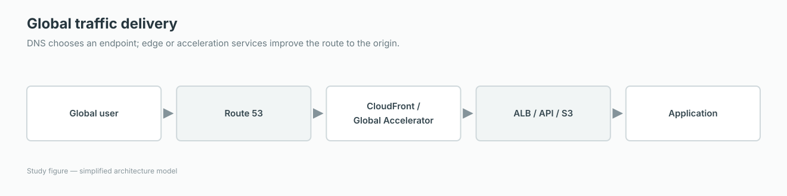

Decide when a design needs Route 53, CloudFront, Global Accelerator, or a regional load balancer.
Recommended path
Guided explanation
How global DNS and delivery services fit together
Route 53, CloudFront, Global Accelerator, and Elastic Load Balancing operate at different layers. A global architecture may use several of them together.

DNS chooses an endpoint; edge or acceleration services improve the route to the origin.
1 · Start here
The big idea: DNS decides, edge services accelerate, load balancers distribute
Route 53 answers DNS queries and can apply routing policies such as weighted, latency, failover, geolocation, and multivalue. CloudFront caches HTTP content at edge locations.
Global Accelerator provides static anycast IP addresses and carries TCP or UDP traffic over the AWS global network to healthy regional endpoints. A regional ALB or NLB then distributes traffic to targets.
2 · Step by step
What AWS does
The client asks DNS for the application address.
Route 53 returns a record according to the chosen policy.
CloudFront or Global Accelerator may receive the connection at the edge.
Traffic reaches a healthy regional endpoint such as an ALB, NLB, EC2 instance, or S3 origin.
3 · Architecture example
Follow the request
Global user→Route 53→CloudFront or Global Accelerator→Regional load balancer→Application
A global website uses Route 53 alias records to CloudFront. CloudFront caches static content and forwards dynamic requests to an ALB in the application Region.
4 · When to use it
Choose it for these requirements
Use Route 53 for DNS routing and health-check-based failover.
Use CloudFront for HTTP/HTTPS caching, edge security, and reduced origin load.
Use Global Accelerator for static IPs and accelerated TCP/UDP routing to regional endpoints.
Use ALB or NLB to distribute traffic within a Region.
5 · Exam tip
Words that should guide your choice
“Cache at edge” means CloudFront. “Two static global IPs” means Global Accelerator. “Weighted or latency DNS routing” means Route 53.
6 · Common mistake
Do not confuse these ideas
DNS answers can be cached until their TTL expires, so DNS failover is not the same as an existing connection being moved instantly.
RememberRoute 53 chooses the address. CloudFront caches. Global Accelerator routes. ELB distributes.
Official AWS referenceUse the documentation after you understand the concept, to confirm quotas, edge cases, and production details.